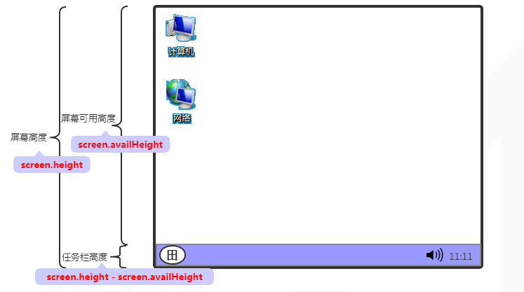
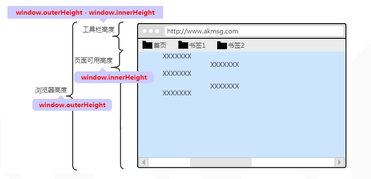
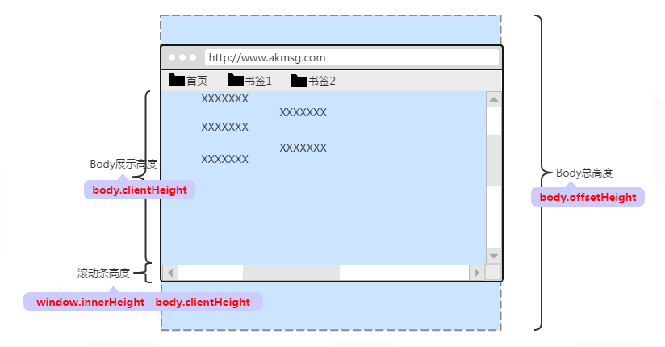

By kin
2016.12.21

screen.height ：屏幕高度。
screen.width ：屏幕宽度。
screen.availHeight ：屏幕可用高度。即屏幕高度减去上下任务栏后的高度，可表示为软件最大化时的高度。
screen.availWidth ：屏幕可用宽度。即屏幕宽度减去左右任务栏后的宽度，可表示为软件最大化时的宽度。
任务栏高/宽度 ：可通过屏幕高/宽度 减去 屏幕可用高/宽度得出。如：任务栏高度 = screen.height - screen.availHeight 。

window.outerHeight ：浏览器高度。
window.outerWidth ：浏览器宽度。
window.innerHeight ：浏览器内页面可用高度；此高度包含了水平滚动条的高度(若存在)。可表示为浏览器当前高度去除浏览器边框、工具条后的高度。
window.innerWidth ：浏览器内页面可用宽度；此宽度包含了垂直滚动条的宽度(若存在)。可表示为浏览器当前宽度去除浏览器边框后的宽度。
工具栏高/宽度 ：包含了地址栏、书签栏、浏览器边框等范围。如：高度，可通过浏览器高度 - 页面可用高度得出，即：window.outerHeight - window.innerHeight。

body.offsetHeight ：body总高度。
body.offsetWidth ：body总宽度。
body.clientHeight ：body展示的高度；表示body在浏览器内显示的区域高度。
body.clientWidth ：body展示的宽度；表示body在浏览器内显示的区域宽度。
滚动条高度/宽度 ：如高度，可通过浏览器内页面可用高度 - body展示高度得出，即window.innerHeight - body.clientHeight。